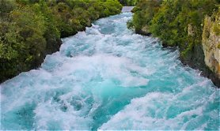

El agua es necesaria para que vivan las personas, los animales y las plantas. Solo una parte muy pequeña del agua del planeta se puede tomar, por eso hay que cuidarla.
| Cómo cuidarla | Ejemplo |
|---|---|
| Cerrar la llave | Mientras te lavas los dientes |
| Bañarse rápido | Menos de 5 minutos |
| No tirar basura | En ríos y lagos |